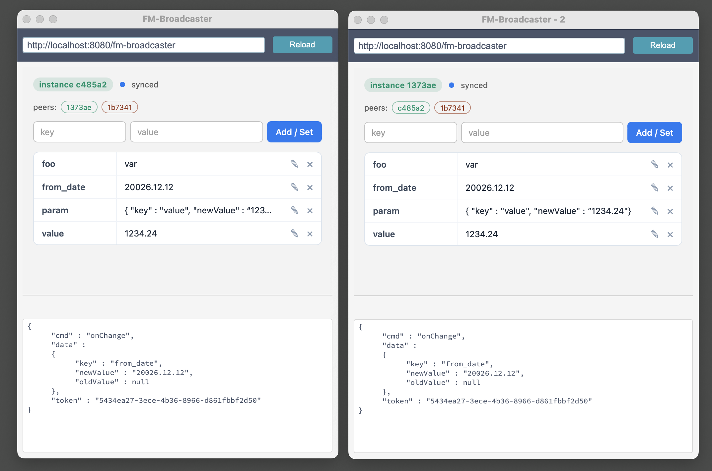

Just wanted to show you something I've been playing with. It's a single HTML file that
turns every Web Viewer in your FileMaker client into a node on a live, shared key/value
store — so any layout, window, or even a different .fmp12 can read, write,
and react to the same data in real time. No server, no schema, no polling.
FM-broadcaster is one HTML file (index.html) that you host anywhere — local
web server, intranet, S3, whatever serves HTTP. You point your Web Viewers at that URL.
From that moment on, every Web Viewer instance running in the same FileMaker client
process automatically discovers its siblings and joins a shared in-memory key/value
store. State propagates between Web Viewers in milliseconds, and FileMaker scripts can
read, write, query, or be notified of changes through a small JSON message protocol.
Under the hood it uses two native browser primitives — BroadcastChannel for
instant peer-to-peer messaging, and localStorage for durability across panel
closes. Both are origin-scoped to the FileMaker client process, which is exactly the
boundary we want: state is shared inside your machine's FileMaker session and nowhere
else.
Each Web Viewer that loads index.html gets a unique instance ID and joins the
channel. Mutations from any instance (or from FileMaker via Perform JavaScript in
Web Viewer) flow through a single applyMutation function that updates
the store, persists it, broadcasts it, and notifies FileMaker via
FileMaker.PerformScript. A two-message handshake (request_sync →
sync_full) lets late-joining panels pick up the current state from existing
peers.

from_date in the
left window appears instantly in the right one, and FileMaker receives the
onChange payload (bottom panel) on both sides — same token, same data.
add, patch, delete, clearget, keys, exists, count — all reply with an onResult payloadonChange into your handler script with {key, oldValue, newValue, token}token on the way in, get it back on the way out — proper async request/response from a FileMaker script.fmp12 in the same client,
FM-broadcaster unlocks UX patterns — live selection sync, observable globals,
async-with-token, cross-Web-Viewer talk, instant notifications — that are otherwise
either impossible or require heavyweight server-backed contortions.
From quick wins to small architectural shifts. Some are obvious, some are not — would love your take on which feel useful in your solutions.
Open three windows of the same solution, or two different .fmp12 files —
selecting a customer in one highlights the same record everywhere. Currently impossible
without server round-trips or external scripting.
Replace Install OnTimer Script patterns — which burn CPU and feel laggy —
with event-driven push. A layout subscribes to a key; when any other layout writes it,
FileMaker receives onChange immediately.
Currently logged-in user, tenant, environment flag, demo mode, current project —
write once in a launcher file, every Web Viewer in every opened file sees it.
Survives layout switches via localStorage.
A long wizard split across multiple layouts or cards keeps its state in the broadcaster instead of a globals table or a passed parameter chain. Back/forward navigation, popovers, and modal dialogs all read and write the same store transparently.
Master/detail across windows: a list window in one place, a detail window in another — selecting in the master pushes the selected ID to every detail window via a single key. No External Data Source calls, no record locking.
Cache server-side script results — permission matrices, complex JSON aggregates —
keyed by user or role. Subsequent layouts read from the broadcaster instead of
re-running the script. The default persist=true makes the cache survive
layout closes.
If you have two Web Viewers on a single layout — say, a chart and a control panel — they can talk to each other directly without round-tripping through FileMaker scripts. This is currently nearly impossible: Web Viewers cannot natively communicate.
Any script anywhere in the solution writes to a notifications key;
a single notification Web Viewer in a status-bar layout displays them. One line of
FileMaker code replaces an entire custom notification subsystem.
The token pattern (UUID flows through add → onChange)
lets FileMaker scripts behave as if calling a synchronous API with a callback.
Native FileMaker has no clean idiom for this — usually faked with global variables
and Pause/Resume.
The query API — get, keys, exists,
count, clear — gives FileMaker an in-memory dictionary
that requires no table, no schema pollution, and no
JSONSetElement/JSONGetElement gymnastics for every lookup.
A "core services" file exposes business logic via broadcaster keys —
currentUserRole, featureFlags.betaUi. Add-on
.fmp12 files just read those keys. Decouples solutions in ways
External Data Sources cannot.
One window holds a KPI dashboard, others hold edit forms. Saves in any form push
the new value to the dashboard window in real time — with no Refresh Window
calls or timer-driven re-queries.
The peers registry already tracks live instances and their colors. Trivial to expose to FileMaker as "X windows currently open" or "user is editing in another window" indicators.
Append ?channel=demo to let a training file run alongside production
data in the same FileMaker client, with no state bleed. Native FileMaker has no such
isolation primitive for in-memory state.
Rapid keystroke-level autosave to localStorage via
persist=true, totally outside FileMaker's record commit cycle.
Recover work after a crash without polluting the schema with draft tables.
Global variables ($$x) appear shared but are per-window in subtle
ways and don't notify on change. The broadcaster gives you observable
globals with a built-in change event — something FileMaker has never
offered.